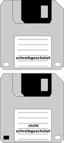
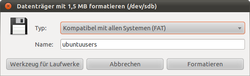
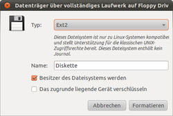
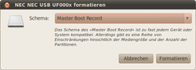
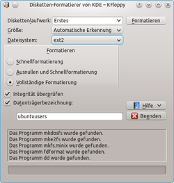

Diskette
Dieser Artikel wurde für die folgenden Ubuntu-Versionen getestet:
Dieser Artikel ist größtenteils für alle Ubuntu-Versionen gültig.
Zum Verständnis dieses Artikels sind folgende Seiten hilfreich:
 Disketten sind magnetische Datenträger, welche nur noch selten zum Einsatz kommen. Sie wurden von externen Festplatten und USB-Sticks abgelöst. 3,5″-Disketten sind am weitesten verbreitet und können durch die im Computer verbauten Diskettenlaufwerke (Floppy) ausgelesen werden. Feuchtigkeit und Magnetismus wirken sich negativ auf die Haltbarkeit des Mediums aus, daher sind regelmäßige Backups zu empfehlen.
Disketten sind magnetische Datenträger, welche nur noch selten zum Einsatz kommen. Sie wurden von externen Festplatten und USB-Sticks abgelöst. 3,5″-Disketten sind am weitesten verbreitet und können durch die im Computer verbauten Diskettenlaufwerke (Floppy) ausgelesen werden. Feuchtigkeit und Magnetismus wirken sich negativ auf die Haltbarkeit des Mediums aus, daher sind regelmäßige Backups zu empfehlen.
Verwendung¶
Um auf eine Diskette auch schreibend zugreifen zu können, muss zuerst überprüft werden, ob die Diskette schreibgeschützt ist. Dazu schiebt man den Schreibschutzschieber auf der Hinterseite der Diskette nach unten, so dass dieser ggf. eine Öffnung verschließt. Nun die Diskette wieder einlegen und beim Formatieren darauf achten, dass das Diskettenlaufwerk nicht im System eingebunden ist, ansonsten kann der Vorgang nicht durchgeführt werden.
|  |
| 3,5″-Disketten mit und ohne Schreibschutz |
Gruppe¶
Der Benutzer muss der Gruppe floppy angehören [2], um Diskettenlaufwerke verwenden zu dürfen.
Einhängen¶
Da Diskettenlaufwerke eine schon etwas in die Jahre gekommene Technik darstellen, funktioniert der Zugriff auf diese nicht immer problemlos. Mit den der hier vorgestellten Methoden sollte es aber funktionieren. Um das Diskettenlaufwerk dauerhaft einzurichten, müssen die nächsten zwei Punkte abgearbeitet werden.
Hinweis:
Um Datenverlust durch beschädigte Dateisysteme zu vermeiden, die Diskette immer vor dem Entfernen aus dem Laufwerk aushängen!
udev¶
Um auf die Floppy zugreifen zu können, muss die udev-Regel /lib/udev/rules.d/80-udisks.rules kontrolliert und eventuell bearbeitet [4][5] werden. Hier beim verwendeten Laufwerk den Wert ENV{ID_DRIVE_FLOPPY}="1" zu ENV{ID_DRIVE_FLOPPY}="0" ändern. Ein Beispiel für ein internes Disketten-Laufwerk:
# PC floppy drives
#
KERNEL=="fd*", ENV{ID_DRIVE_FLOPPY}="0"
# USB floppy drives
#
SUBSYSTEMS=="usb", ATTRS{bInterfaceClass}=="08", ATTRS{bInterfaceSubClass}=="04", ENV{ID_DRIVE_FLOPPY}="1"Ein weiteres Beispiel speziell für ein USB-Diskettenlaufwerk von NEC:
BUS=="usb", KERNEL=="sd?f", SUBSYSTEMS=="usb", ATTRS{vendor}=="NEC ", ATTRS{model}=="USB UF000x ", SYSFS{idVendor}=="0409", NAME="Floppy"Sofern gewünscht, noch einen Eintrag in der fstab vornehmen und einen Neustart des udev-Systems sowie ein Neueinlesen der fstab einleiten. Oder einfach den Rechner neu starten.
fstab¶
Sollte in der Datei /etc/fstab noch kein das interne Diskettenlaufwerk betreffender Eintrag vorhanden sein, sollte man die folgende Zeile ergänzen, um nach einem Neustart auf die Diskette zugreifen zu können:
/dev/fd0 /media/floppy0 auto rw,user,noauto,exec 0 0
Hier je nach verwendetem Dateisystem die Vielzahl von Optionen berücksichtigen.
Für USB-Diskettenlaufwerke kann der Eintrag wie folgt aussehen:
# Floppy /dev/sd* UUID=65B4-1EB6 /media/Floppy auto auto,users,uid=1000,gid=100,dmask=027,fmask=137,utf8 0 0
udisks¶
Seit Ubuntu 10.04 wird komplett auf den Einsatz von HAL verzichtet, dessen Funktionen nun durch udev, udisks und upower bereitgestellt werden. Daher ist es möglich, Disketten mittels udisks einzuhängen. Dazu muss dieses im Zweifelsfall über folgendes Paket installiert werden:
udisks
 mit apturl
mit apturl
Paketliste zum Kopieren:
sudo apt-get install udisks
sudo aptitude install udisks
Danach kann eine eingelegte Diskette mit dem Befehl [3]
udisks --mount /dev/fd0
unter dem Pfad /media/floppy0 bzw. /media/usb0 eingehängt werden.
Aushängen kann man die Diskette entweder über
udisks --unmount /dev/fd0
oder direkt über das Auswerfen-Symbol des Dateimanagers bzw. der Auswerfen-Funktion des Desktop-Symbols.
Formatieren¶
Hinweis:
Das Formatieren einer Diskette funktioniert nur, wenn sie nicht eingehängt ist!
Achtung!
Bei diesen Vorgängen werden alle sich auf der Diskette befindlichen Daten gelöscht! Wurde fälschlicherweise die falsche Diskette formatiert, kann man eventuell noch Reste wiederherstellen, siehe Datenrettung.
GNOME¶
Es gibt verschiedene Wege, eine Diskette zu formatieren.
|  |
| Nautilus |
Nautilus¶
Einen  Rechtsklick auf die Desktopverknüpfung des Laufwerks ausführen und aus dem Menü den Punkt "Formatieren..." wählen. Alternativ in GNOME über "Orte -> Rechner" diesen Punkt aufrufen.
Rechtsklick auf die Desktopverknüpfung des Laufwerks ausführen und aus dem Menü den Punkt "Formatieren..." wählen. Alternativ in GNOME über "Orte -> Rechner" diesen Punkt aufrufen.
Die gewünschten Optionen festlegen und über "Formatieren" wird die Auswahl umgesetzt.
| Optionen | |
| Menüpunkt | Beschreibung |
| Typ | Auswahl der unterschiedlichen Formatierungsoptionen (FAT, ext2 oder ext3-Dateisysteme) - FAT auf Wunsch verschlüsselt. |
| Name | Volumenamen festlegen. |
Über die Schaltfläche "Werkzeug für Laufwerke" öffnet man die Laufwerksverwaltung.
Hinweis:
Um eine verschlüsselte Partition einrichten zu können muss im Vorfeld Cryptsetup installiert werden.
|  |
| Dateisystemauswahl |
|  |
| Laufwerksverwaltung |
Laufwerksverwaltung¶
Seit Ubuntu 9.10 kann das Standardprogramm Laufwerksverwaltung verwendet werden. Es ist unter "System -> Systemverwaltung -> Laufwerksverwaltung" zu finden. Aus der Liste das Diskettenlaufwerk auswählen und über die Schaltfläche "Datenträger formatieren" das gewünscht Dateisystem auswählen. Wird die Diskette nur mit Linuxrechnern verwendet, empfiehlt sich ext2 als Dateisystem. Soll ein Datenaustausch auch mit anderen Betriebssystemen möglich sein, sollte FAT gewählt werden. Man kann der Partition noch einen Namen verpassen und auswählen, ob man Besitzer des Dateisystems werden soll (Standard) und ob man die Diskette verschlüsseln möchte.
KDE¶
|  |
| KFloppy |
KFloppy¶
Die KDE Community bietet mit dem Programm KFloppy ein Werkzeug zum Formatieren von Disketten an. Dazu wird das folgende Pakete installiert [1]:
kfloppy (universe)
mit apturl
Paketliste zum Kopieren:
sudo apt-get install kfloppy
sudo aptitude install kfloppy
Um das Programm zu starten, über das Startmenü
"K-Menü -> Dienstprogramme -> KFloppy".
auswählen.
KFloppy fragt nach dem Diskettentyp sowie der Dateisystemgröße (3,5-Zoll-, 5,25-Zoll-Format) oder ermittelt dies selbständig. In der Regel werden aber Disketten als "High Density", 1.44MB "3.5" genutzt. Eine weitere Option ist die Wahl des Dateisystems. Falls man die Diskette in einer DOS-Umgebung (Windows) nutzen möchte, wählt man "MS-DOS (FAT)" aus, andernfalls "Linux Native (ext2)". Das Programm unterstützt ebenfalls das Minix-Dateisystem.
Unter "Datenträgerbezeichnung" kann man der Diskette noch einen Namen geben.
| Formatierungsoptionen | |
| Option | Beschreibung |
| Schnellformatierung | Hier wird lediglich die Dateitabelle des eingelegten Mediums gelöscht, sodass Dateien wiederhergestellt werden können. Es findet keine Überprüfung auf fehlerhafte Blöcke statt. |
| Ausnullen und Schnellformatierung | Dieses Format schreibt zuerst Nullen auf das Medium und erstellt im Anschluss das neue Dateisystem. |
| Vollständige Formatierung | Die vollständige Formatierung überprüft die Diskette auf fehlerhafte Blöcke und wird diese durch eine Low-Level Formatierung beseitigen/reparieren. |
Terminal¶
| Überblick Formatierung mit der Befehlszeile | |||
| Dateisystem | Schnellformatierung | Mit Überprüfung | |
| VFat (Dos) | mkdosfs /dev/fd0 | mkdosfs -c /dev/fd0 | |
| Ext2 | mkfs.ext2 /dev/fd0 | mkfs.ext2 -c /dev/fd0 | |
Vollständig löschen¶
Achtung!
Dieser Befehl ist mit Vorsicht zu genießen, da so gelöschte Disketten nur mit Aufwand wiederhergestellt werden können!
Falls der Datenträger vollständig überschrieben werden soll, diesen Befehl benutzen:
dd if=/dev/zero of=/dev/fd0
Disketten-Images¶
In den folgenden Beispielen wird davon ausgegangen, dass der Mountpunkt unter /dev/fd0 liegt. Dieser muss ggf. angepasst werden.
Erstellen¶
Um Speicherabbilder auf Disketten schreiben zu können, ein Terminal öffnen [3] und den folgenden Befehl eingegeben:
dd if=Name_des_Image.imagetyp of=/dev/fd0
Um ein Image zu erstellen:
dd if=/dev/fd0 of=Name_des_Image.img
Alle Möglichkeiten sind im Artikel DiskDump zu finden.
ufiformat¶
ufiformat  ist ein Kommandozeilenprogramm zur Low-Level-Formatierung für USB-Diskettenlaufwerke.
ist ein Kommandozeilenprogramm zur Low-Level-Formatierung für USB-Diskettenlaufwerke.
Das Paket
ufiformat (universe)
mit apturl
Paketliste zum Kopieren:
sudo apt-get install ufiformat
sudo aptitude install ufiformat
installieren [1] und das Programm mit den gewünschten Parametern aufrufen [3]:
| ufiformat | |
| Parameter | Beschreibung |
| ufiformat -i | Angeschlossene USB-3,5″-Diskettenlaufwerke anzeigen. |
| ufiformat -i /dev/sdf | Detailinformationen zum Laufwerk und dem eingelegten Speichermedium ausgeben |
| ufiformat /dev/sdf | Datenträger formatieren |
| ufiformat -f 1440 /dev/sdf | Floppy für High Density formatieren |
Problembehebung¶
Nautilus¶
Sollte das Einhängen über Nautilus nach den hier vorgeschlagenen Änderungen mittels eines gewöhnlichen  Linksklicks auf das Diskettenlaufwerk nicht funktioneren, so kann man es über einen Rechtsklick und den Menüpunkt "Medium erkennen" versuchen.
Linksklicks auf das Diskettenlaufwerk nicht funktioneren, so kann man es über einen Rechtsklick und den Menüpunkt "Medium erkennen" versuchen.
/dev/fd0 existiert nicht¶
Erscheint die Meldung "/dev/fd0 existiert nicht" oder "/dev/fd0 does not exist", dann ist sehr wahrscheinlich das Modul für die Floppy nicht geladen. Dies kann man im Terminal feststellen:
lsmod | grep floppy
Bleibt die Zeile leer (das Modul ist also nicht geladen), kann man das nachholen mit:
sudo modprobe -v floppy
Um das Modul in Zukunft bei jedem Systemstart automatisch zu laden, muss in der Datei /etc/modules das Kernelmodul floppy eingetragen werden.
Tipps¶
Datenträgerpflege¶
Disketten verlieren auf ihnen gespeicherte Daten durch Umwelteinflüsse (Feuchtigkeit und Magnetfelder). Die Lebensdauer beträgt maximal 10-30 Jahre - sofern sie nicht in Gebrauch sind. Sie ist abhängig von der Schreibdichte - so sind Speichermedien mit geringerer Dichte länger haltbar. Regelmäßige Datensicherungen beugen einem Datenverlust vor.

- Erstellt mit Inyoka
-
 2004 – 2017 ubuntuusers.de • Einige Rechte vorbehalten
2004 – 2017 ubuntuusers.de • Einige Rechte vorbehalten
Lizenz • Kontakt • Datenschutz • Impressum • Serverstatus -
Serverhousing gespendet von